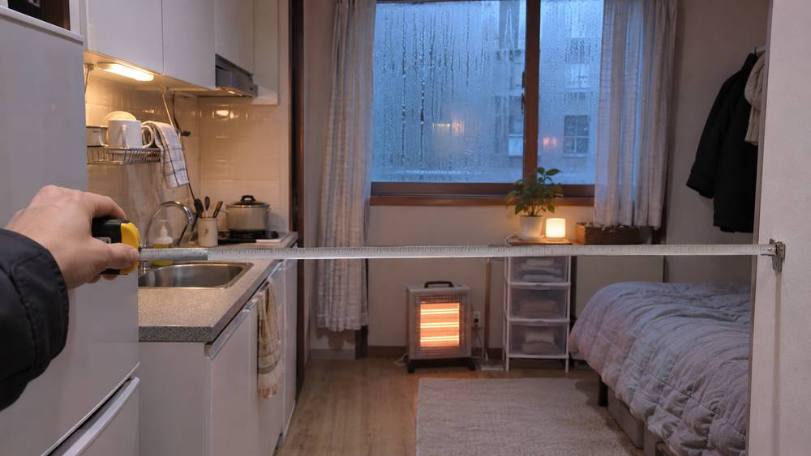

최저주거기준 15년 만에 개정 추진…기후재난 기준 논의

국토교통부가 20일 오후 서울 토론회에서 1인 가구 14㎡ 등 2011년 면적·설비 기준을 다시 보고, 보편형 공공임대 입주 기준도 듣는다.
국토교통부가 2011년 이후 15년 만에 최저주거기준을 고치기 위해 11월 20일 오후 서울에서 주거복지정책 토론회를 연다. 토론회는 오후 1시 30분부터 5시 10분까지 서울 시청역 인근 모임공간 상연재에서 열리고 일반에 공개된다. 이번 논의는 최소 주거면적에 그치지 않고 필수 설비와 구조·성능·환경 기준 전반을 다루며, 기후재난과 안전 대응을 함께 따진다.
지금 기준은 2011년 5월 27일 국토해양부 공고 제2011-490호로 정한 것이다. 최소 주거면적은 1인 가구 14㎡, 부부 26㎡, 자녀 둘을 둔 4인 가구 43㎡, 노부모를 모신 6인 가구 55㎡다. 필수 설비는 상·하수도를 갖춘 전용 입식부엌과 전용 수세식화장실, 목욕시설이다. 구조 기준에는 내열·방열·방습 재질과 방음·환기·채광·난방설비, 해일·홍수·산사태 위험 지역을 피할 것 등이 들어 있다.
1부에서는 서지은 영남대 교수가 기준 개선 방안을 발제하고, 이길제 국토연구원 주거정책연구센터장과 최은영 한국도시연구소장, 이동현 홈리스행동 상임활동가 등이 토론한다. 2부에서는 조승연 LH토지주택연구원 수석연구원이 '보편형 공공임대' 추진 방향을 발표하고 입주 기준·임대료 산정 방식·거주 기간을 놓고 의견을 듣는다. 보편형 공공임대는 여러 계층이 질 좋은 주택에 부담할 수 있는 임대료로 오래 살도록 새로 만드는 공공임대 유형이다.
토론회는 정부가 9월 21일 발표한 '주거안정플랜'의 후속 조치다. 이 계획은 2030년까지 공적주택 119만 호를 공급하고 장기공공임대를 전체 주택의 10% 이상으로 늘리는 목표를 담았다(2024년 장기공공임대는 193만 호, 8.4%). 주최는 국토부, 주관은 영남대 산학협력단과 LH토지주택연구원이며, 개정 기준을 공고할 날짜는 아직 정해지지 않았다.
뉴스 바로 읽기
본지가 공개 자료와 본지 보도로 확인한 사실만 덧붙입니다
지금 기준 원문은 국가법령정보센터 행정규칙에서 「최저주거기준」(국토해양부 공고 제2011-490호)으로 찾아볼 수 있다. 이 기준은 2011년 공고한 날부터 시행돼 지금까지 바뀌지 않았다. 토론회는 일반에 공개되며, 보편형 공공임대의 입주 기준과 임대료 산정 방식은 아직 정해지지 않았다.
출처: 국토교통부 2026-11-19 보도자료 「더 나은 주거환경, 더 든든한 주거안정 "최저주거기준 높이고 공공임대 선택 넓힌다"」(11월 20일 조간) 원문 보기
출처: 국가법령정보센터 2011-05-27 「최저주거기준」(국토해양부 공고 제2011-490호) 원문 보기
출처: 정책브리핑 2026-11-03 기고 「집 걱정 없이 내일을 꿈꿀 수 있도록…공공주택의 경계를 넓히다」(강미나 국토연구원 선임연구위원) 원문 보기